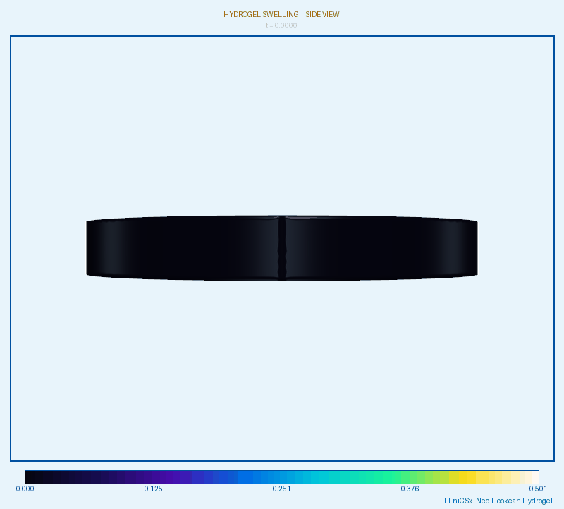

Soft Matter · Article
Dissipative
chemo-elasticity.
A thermodynamically consistent continuum theory in which a chemical species diffuses into an elastic network and swells it: the mechanical and chemical balance laws are derived from one energy, and the second law restricts how the species can move.
Many soft materials absorb a solvent and swell to many times their dry volume while remaining elastic. Describing them requires coupling finite elastic deformation to solvent transport. I call the resulting class of models dissipative chemo-elasticity: chemo-elastic because the chemical potential of the solvent and the mechanical stress are derived from a single free energy and feed back on each other, and dissipative because the diffusion of the solvent is an irreversible process that the second law must constrain. Here the solvent is water. I assume quasi-static conditions and neglect viscoelastic effects.
Kinematics and mass balance
The polymer network and the water are each incompressible, so the volume change of the body is due solely to absorbed water. The body goes from a dry reference configuration to a swollen current configuration through the motion \( \boldsymbol{x}=\boldsymbol{\chi}(\boldsymbol{X},t) \), with deformation gradient \( \boldsymbol{F}=\nabla\boldsymbol{x} \) and \( J=\det\boldsymbol{F}>0 \). Let \( C \) be the water concentration per unit dry volume and \( \boldsymbol{J}_w \) its flux. With no source or sink,
Since the volume change comes only from water, with \( \Omega>0 \) the molar volume of water, the swelling constraint is
where \( \phi^p \) and \( \phi^w \) are the volume fractions of network and water.
Elastic and mixing energy
The energy per unit current volume is the sum of the elastic energy of the swollen network and a Flory–Huggins mixing energy:
The logarithmic terms are the entropy of mixing and the last term, with Flory parameter \( \chi \), is the enthalpy of mixing. Pulled back to the reference configuration with \( dv=J\,dV \), the total energy is \( E=\int_\kappa \tilde W(\boldsymbol{F},C)\,dV \). Frame indifference requires
Balance laws from virtual power
Varying the deformation and the concentration, and enforcing the swelling constraint with a Lagrange multiplier \( p \) (the swelling pressure), gives the first Piola–Kirchhoff stress and the chemical potential
with \( \boldsymbol{C}=\boldsymbol{F}^{T}\boldsymbol{F} \) the right Cauchy–Green tensor. The principle of virtual power then gives mechanical and chemical equilibrium, with prescribed traction \( \boldsymbol{p}_0 \) and prescribed chemical potentials \( \mu_0 \), \( \mu_{\partial0} \):
The two equations are coupled through the stress and the chemical potential: water absorption drives deformation of the network and, conversely, mechanical stress changes the equilibrium water content.
Thermodynamic restrictions
Diffusion is dissipative, so the flux must be consistent with the second law. Requiring non-negative global dissipation and using the Coleman–Noll procedure, the power flux through the boundary is \( \boldsymbol{q}=\mu\,\boldsymbol{J}_w \). Because of the swelling constraint, \( \dot{\boldsymbol{F}} \) and \( \dot C \) are not independent, so the constraint reaction has to be handled explicitly. After doing so, the stress and chemical-potential terms cancel and the dissipation inequality reduces to
The most general flux law satisfying this for every \( \nabla\mu \) is
where the mobility tensor \( \boldsymbol{K} \) must be positive semi-definite. This restriction is both physically necessary and directly usable in a finite-element implementation. Writing \( \boldsymbol{K}=\sum_i\sigma_i\,\boldsymbol{\tau}_i\otimes\boldsymbol{\tau}_i \) with \( \sigma_i>0 \) gives \( \boldsymbol{J}_w\cdot\nabla\mu=-\sum_i\sigma_i(\boldsymbol{\tau}_i\cdot\nabla\mu)^2\le0 \). If the dissipation vanishes the flux vanishes, and if \( \boldsymbol{K} \) is positive definite the chemical potential is uniform: this is thermodynamic equilibrium. In the isotropic case \( \boldsymbol{K} \) reduces to a scalar mobility \( k(C) \), and the system becomes a nonlinear diffusion equation once \( W \) is specified.
Finite-element simulation
The coupled problem of momentum balance, chemical equilibrium, mass balance with flux and the swelling constraint is discretized and solved numerically. The animations show a specimen swelling, viewed from three directions and colored by displacement magnitude, as water is absorbed and the network deforms toward its equilibrium swollen state.



Extensions in progress
The theory is being extended to biological tissues and to delamination problems in layered systems, where mismatch in swelling between adjacent layers drives interfacial failure. This connects it to my work on fracture, including the peridynamic fracture and peeling simulations.